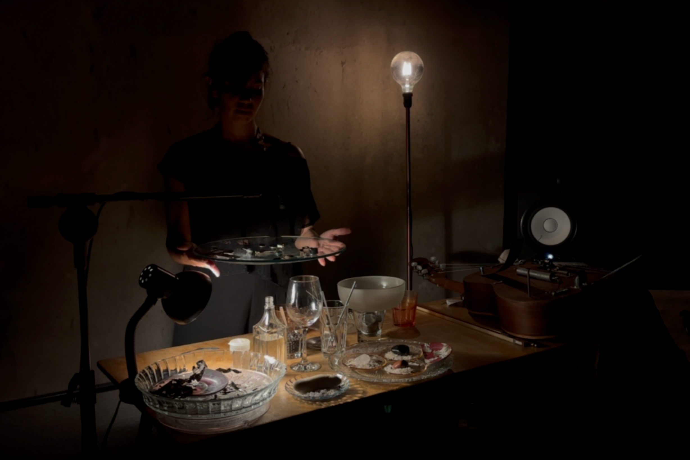
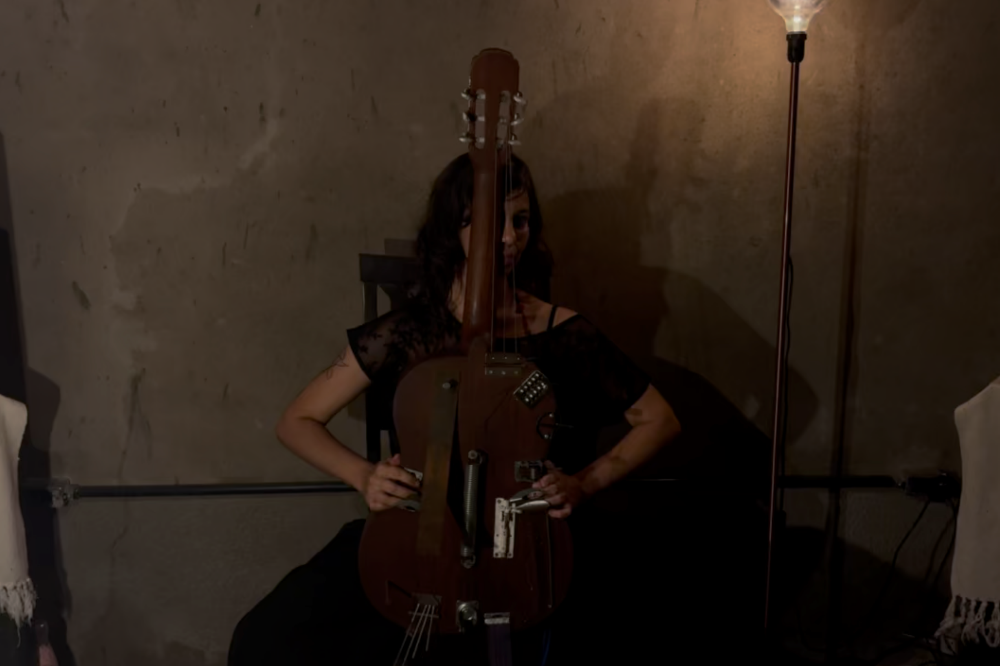
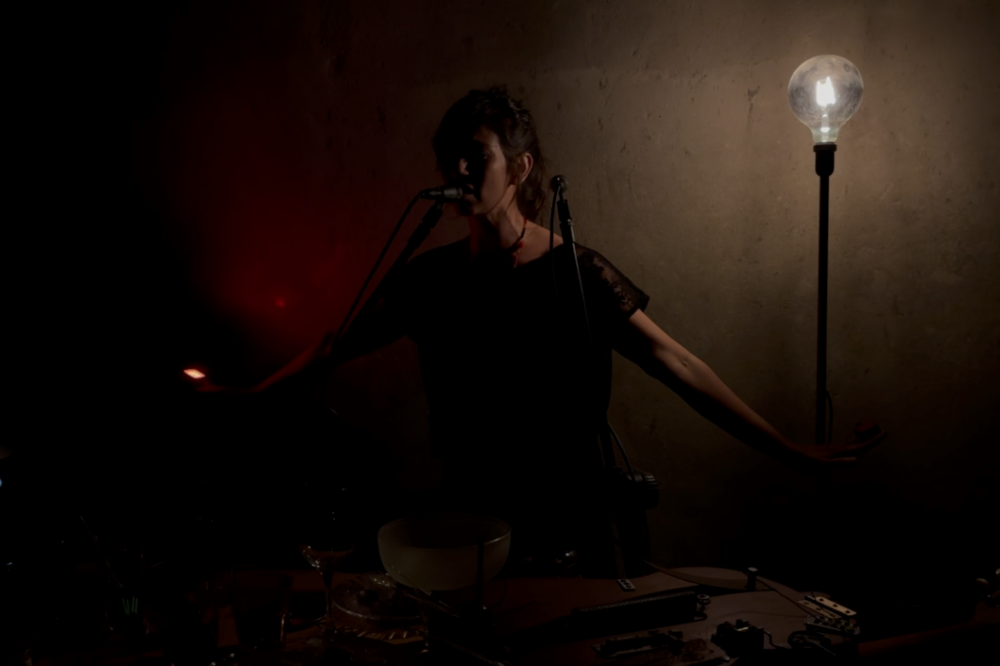

SONA apresenta THAÍS DE CAMPOS
A COREOGRAFIA ACÚSTICA DAS COISAS COMUNS

Thaís conta que sua formação nasce do cinema, tanto como espectadora quanto realizadora. O audiovisual foi um campo decisivo na construção de seus interesses e direções estéticas. Em Fortaleza, estudando na escola pública de audiovisual da Vila das Artes, aproximou-se da manipulação de imagens ao vivo e da relação entre som, gesto e materialidade. Em 2009, criou o projeto Nós em Fortaleza, ao lado de Uirá dos Reis e Frederico Benevides, trabalhando com imagens de arquivo processadas ao vivo e trilhas improvisadas. Esse experimento formativo já introduzia elementos centrais de sua trajetória futura: apropriação de imagens alheias, degradação estética, improvisação sonora e a ideia de que cada apresentação deve existir apenas naquele instante. Como diz Thaís, “quem viu, viu, quem não viu, perdeu”. É uma ética da presença que não celebra apenas o efêmero, mas a própria intransferibilidade de uma ação ao vivo, onde corpos, ruído, movimento e atenção se tornam condições irreplicáveis.
Da experimentação audiovisual, ela migrou para a música e o improviso. Tocava violão em casa, de maneira íntima, com poucos acordes, mas o que a mobilizou foi perceber que imagem podia virar som, que projeção podia se comportar como montagem musical. Esse encontro entre práticas domésticas e cena pública tornou-se o eixo de sua pesquisa: uma costura entre o gesto cotidiano e a invenção improvisada, entre o que se faz sozinha em casa e o que se arrisca diante de um público. Muitas de suas parcerias surgem nesse espaço doméstico ampliado, onde músicos e amigos visitam, testam instrumentos, criam pequenas sessões improvisadas e, a partir de um encontro, descobrem uma sonoridade comum. Foi nesse ambiente que ocorreu a virada, quando “não sei tocar nada” transformou-se em “posso tocar qualquer coisa”.
Esse despojamento se apresenta como estratégia. Thaís evita depender de softwares, preferindo instrumentos físicos, microfones improvisados, sintetizadores analógicos e objetos encontrados. Ela constrói um estúdio caseiro composto por possibilidades brutas. Em 2016, por exemplo, formou com Eduardo Carpinelli e Ivo Lopes Araújo a banda Microleão Dourado, onde a experimentação coletiva era o fundamento. As gravações eram feitas ao vivo, abraçando sons da cidade e da fazenda, passos, vento, deslocamentos. Ruído ambiental como material bruto.
Seu método de abertura ao inesperado revela uma disciplina dupla que oscila entre improvisação e estrutura. A improvisação ocorre dentro de condições concretas, com microfones, máquinas antigas, câmeras simples, objetos precários. Há rigor na escuta. E essa ética aparece também em artistas que, assim como Thaís, trabalham com o mínimo como detonador de forma. A artista multidisciplinar argentina Cecilia Bengolea (1979-), por exemplo, parte do corpo cotidiano e do gesto não refinado para construir performances que dependem do encontro entre o que ela faz e o que o ambiente devolve. Já a brasileira Berna Reale (1965-) utiliza objetos ordinários e espaços públicos como agentes performativos que tensionam corpo, política e instabilidade. Seus trabalhos se aproximam por compartilharem um princípio: a ação nasce do atrito entre corpo, material e circunstância.
Um dos aspectos mais fortes na fala de Thaís é sua relação com objetos e a capacidade de extrair som de qualquer coisa: “eu posso fazer um som a partir de um brinco, ou de um lugar muito silencioso”. Ela coleciona materiais cotidianos, às vezes descartados, guiada pela intuição de que podem produzir sons imprevistos. Sacos plásticos, por exemplo, são categorizados apenas pelo tipo de ruído que fazem quando microfonados, amassados ou tensionados. Esses objetos deixam de ser metáforas e tornam-se fontes ativas de textura sonora. Em cena, eles são manipulados, acoplados a estruturas, arrastados, deixados para vibrar. A performance nasce desse contato direto, físico, material.

Esse interesse por objetos como parceiros operacionais encontra forma condensada em MulherMÁquina, seu projeto atual e em constante mutação. A performance propõe um estado de corpo atravessado por ruídos, interrupções e tentativas de restabelecer circuitos internos. Thaís não “imita” o comportamento de uma máquina, mas investiga como pequenos padrões mecânicos (repetição, falha, hesitação, loop) podem reorganizar sua presença. O curto-circuito, por exemplo, funciona como sensação e como dramaturgia, definindo ritmo, suspendendo gestos e criando microtemperaturas emocionais que movimentam a cena.
Em MulherMÁquina, o espaço doméstico também se transforma. Talheres, copos, pratos e objetos de cozinha aparecem como se fossem vistos pela primeira vez, quase estrangeiros. A performer tenta decifrar o comportamento desses objetos, escutando suas “tendências”, como diz. Eles deixam de ser utensílios e tornam-se extensões do corpo. Cada objeto oferece uma gramática sonora, e a performance consiste em acompanhar o processo de aprendizado dessa gramática ao vivo.
A noção de “ativar o que já existe nos objetos” é recorrente na fala de Thaís. Essa ideia de uma “autonomia mínima” dos materiais ecoa práticas de artistas como a sul-africana Dineo Seshee Bopape (1981-), que trabalha com objetos carregados de história, poeira, restos, e confere a esses materiais uma agência simbólica que estrutura sua obra. Não se trata de atribuir vida literal aos objetos, mas de reconhecer que eles produzem efeitos, resistências, ritmos, acidentes. Em MulherMÁquina, essa micro-autonomia organiza a cena, e a performance avança conforme o que o ambiente devolve, seja um estalo inesperado, um loop irregular, ou uma vibração não prevista.
Essa instabilidade é central no projeto. Thaís usa o termo “bug” para se referir a pequenos erros, travamentos, interrupções que surgem no meio da ação. Aqui, o bug não é problema técnico, mas matéria de composição. Em vez de buscar precisão maquínica, a performance abraça desvios e incorpora falhas como motores narrativos.
Uma das imagens mais fortes da entrevista é seu violão reformado. Antes apenas uma carcaça sem cordas, virou instrumento reinventado: lixado, limpo, perfurado com pregos, adaptado com ferrolhos, fios, peças improvisadas. Thaís não domina esse instrumento, ela o descobre. As rachaduras e ferrugens não são entraves, mas potência. O violão híbrido conecta o ambiente doméstico ao ato performativo, transformando um objeto remendado em corpo sonoro vivo.
Quando se apresenta, Thaís diz que o público encontra uma “outra presença”. Ela cita como projetar imagens gigantes de seus próprios olhos, distorcidos e estranhos, provoca nela mesma riso e desconforto. Ela prefere mostrar o “estranho” a exibir as “imagens lindas que já fez”. A performance torna-se assim a invenção de uma subjetividade instável, onde a vulnerabilidade gera novas formas de afetar e ser afetada. Essa aposta na instabilidade aproxima seu trabalho da pesquisa da artista colombiana María José Arjona (1972-), cuja prática em performance de longa duração ativa estados corporais alterados para investigar limites, repetição e resistência. Em obras como Línea de Vida (2016) e All the Others in Me (2012-2018), Arjona sustenta ações contínuas que transformam a percepção do corpo no tempo, levando-o a zonas de exaustão, concentração e hiperpresença. O elo com Thaís aparece justamente na produção de uma presença expandida. Ambas constroem condições performativas em que o corpo deixa de ser apenas suporte de ações e passa a ser um sistema sensível atravessado por tensões, erros, desvios e reconfigurações, gerando formas de percepção que não seriam acessíveis em estados cotidianos.
Em gravação exclusiva para a SONA, Thaís apresentou três faixas que evidenciam, cada uma à sua maneira, camadas distintas de seu processo criativo. Em “MulherMÁquina, Ato 1”, ela trabalha a partir da própria voz, explorando uma materialidade sonora que nasce do corpo em estado bruto. A sobreposição de camadas vocais constrói uma paisagem irregular, feita de respirações ampliadas, sussurros distorcidos e pequenas fricções que se acumulam como organismos. A respiração deixa de torna-se ritmo, ora acelerada, ora espaçada, sempre aberta ao risco de perder o controle. À medida que a faixa avança, efeitos sutis transformam essa massa vocal em texturas que oscilam entre o biológico e o maquínico, como se a voz se estendesse para além da fala e entrasse em um território híbrido, onde seu timbre vibra entre carne, prótese e ruído. Cada camada reage à anterior, criando um tipo de coreografia sonora interna, que só existe porque ela se permite escutar sua própria instabilidade.
“MulherMÁquina, Ato 2” apresenta o violão reformado, o instrumento-frankenstein que sintetiza a poética de Thaís. Aqui, não ouvimos acordes nem estruturas reconhecíveis. O que surge é uma escuta tátil, um gesto que se guia pela sensação do contato. Ela toca o violão como quem examina um corpo desconhecido, deslizando os dedos pelas partes lixadas, raspando levemente onde há prego, pressionando superfícies que reverberam de forma precária e irregular. Cada toque é uma pergunta que ela faz ao instrumento; a resposta, seja um estalo, uma vibração curta, um grave abafado, determina o próximo gesto. Há um ritmo que não é métrico, mas muscular, e que transforma a performance em um tipo de conversa íntima com o próprio objeto. O resultado é um som que nunca se estabiliza completamente, sempre à beira de se desfazer, como se a música surgisse do ato de manter unido algo que insiste em se dispersar.
Em “MulherMÁquina, Ato 3”, a artista desloca o foco para a mesa de objetos utilizada em MulherMÁquina. Aqui, a performance se organiza em torno da ativação de pequenos eventos materiais. Os objetos, domésticos, encontrados, reaproveitados, são usados como motores que determinam o sentido da peça. Thaís procura o instante exato em que cada objeto “responde”: o ponto de vibração de um copo apoiado de lado, ou o atrito entre dois talheres. A faixa convida o ouvinte a acompanhar esse processo de descoberta, como se estivéssemos na mesma sala, observando a performer testar o comportamento de cada material. Não há pressa; a peça se constrói em microdecisões, na percepção do que o objeto devolve. É nesse jogo relacional, quase coreográfico, que surge uma dramaturgia sonora feita de hesitações, tentativas, desvios e pequenas revelações.
Essas três faixas sintetizam a narrativa sonora de Thaís: ativar instâncias mínimas como gestos, objetos, máquinas, arquivos, e combiná-las para gerar experiências. No fundo, seu trabalho nos convida a escutar e ver de outro modo. A reconhecer que nada está pronto, que tudo pode ser reiniciado, reativado, refeito. Um saco plástico, um violão remendado, uma mesa doméstica, tudo pode ser dispositivo. Assim, sua poética exemplifica que o mundo todo é matéria disponível para invenção. E que cada apresentação é sempre uma aposta no que pode surgir quando permitimos que o mínimo fale.